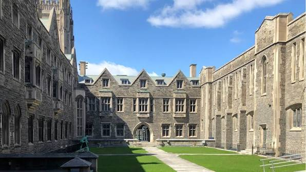
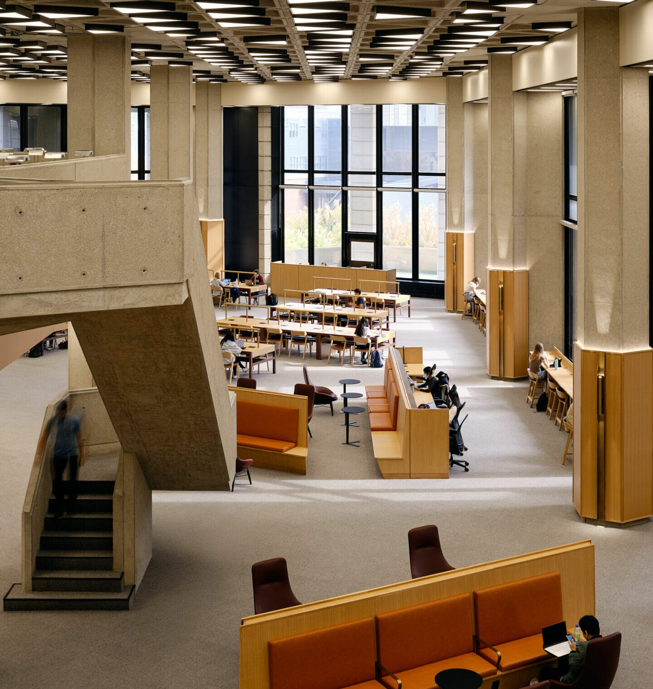
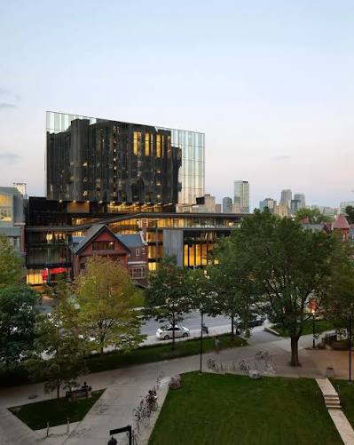
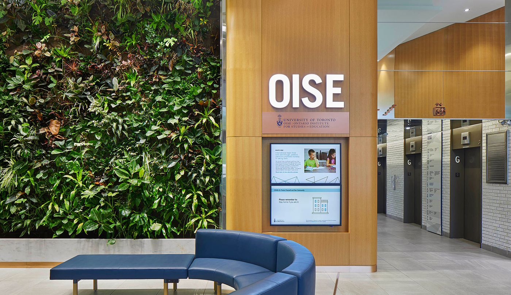
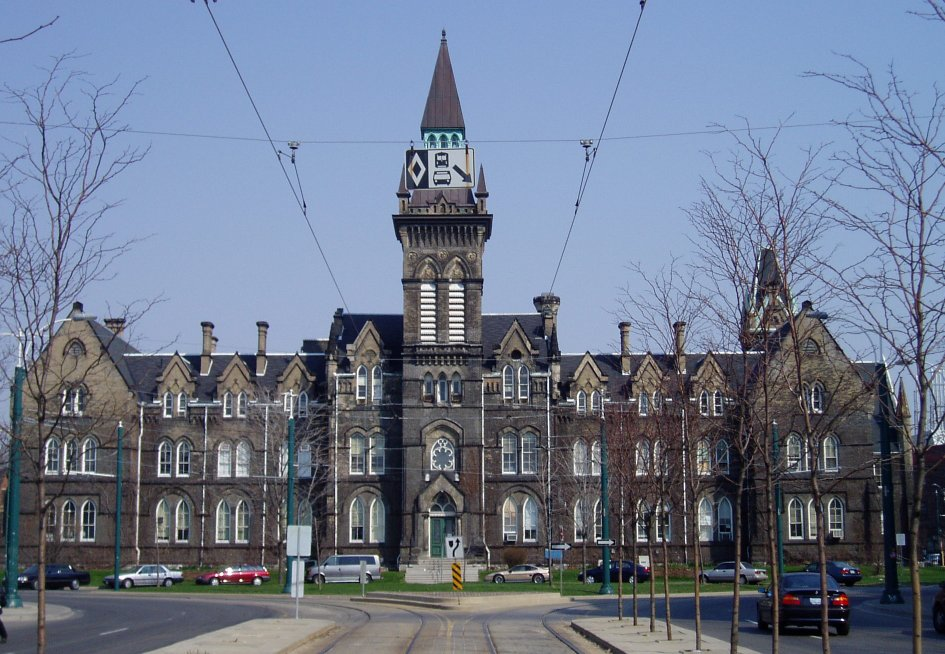
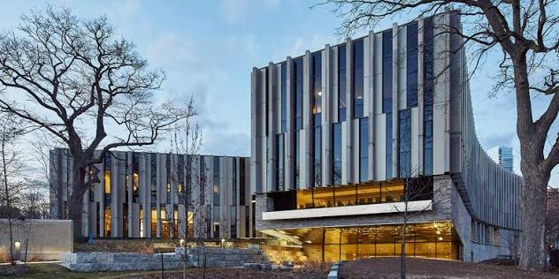

Explore Canadian Campuses
UofT St George Campus Highlights

Hart House
Hart House is a student-focused centre for the arts, dialogue and wellness at the University of Toronto.
Details

Robarts Library
Robarts Library is Canada's largest academic library and the hub for humanities and social sciences at U of T.
Details

Rotman School of Management
The Joseph L. Rotman School of Management is the graduate business school of the University of Toronto.
Details

OISE Building
The Ontario Institute for Studies in Education serving 3,300 graduate students.
Details

The Daniels Building
The Daniels Building is an academic building in Toronto that houses the John H. Daniels Faculty of Architecture, Landscape, and Design
Details

Jackman Law Building
The Henry N.R. Jackman Faculty of Law is the law school of the University of Toronto.